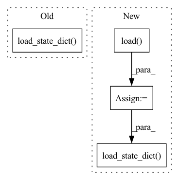

Pattern ID :1561

Before Change
model = ResNet(Bottleneck, [3, 4, 6, 3], last_stride=last_stride, **kwargs)
if pretrained:
model.load_state_dict(model_zoo.load_url(model_urls["resnet50"]))
return model
def resnet101_ibn_a(pretrained=False, last_stride=1, **kwargs):
After Change
model = ResNet(Bottleneck, [3, 4, 6, 3], last_stride=last_stride, **kwargs)
if pretrained:
state_dict = torch.load(model_urls["resnet50_ibn_a"])
new_state_dict = OrderedDict()
for k in state_dict["state_dict"]:
new_k = k.replace("module.", "")
new_state_dict[new_k] = state_dict["state_dict"][k]
model.load_state_dict(new_state_dict, strict=True)
return model
def resnet101_ibn_a(pretrained=False, last_stride=1, **kwargs):
In pattern: SUPERPATTERN
Frequency: 4
Non-data size: 4
Instances
Fragment ID: 6980712
Project Name: tencentyouturesearch/personreid-cacenet
Commit Name: a82d51979279b93a4f34eff01d16de2af6f02b4d
Time: 2020-08-13
Author: fufuyu@tencent.com
File Name: models/backbones/resnet_ibn_a.py
M Class Name: AnonimousClass
N Class Name: AnonimousClass
M Method Name: resnet50_ibn_a(2)
N Method Name: resnet50_ibn_a(2)
M Parent Class:
N Parent Class:
M File Name: models/backbones/resnet_ibn_a.py
N File Name: models/backbones/resnet_ibn_a.py
M Start Line: 194
M End Line: 196
N Start Line: 195
N End Line: 202
'>
Before Change
best_test_mAP = test_mAP_2
// evaluate on test set
model_1_ema.load_state_dict(torch.load(logger.get_checkpoint_path("best")))
print("Test on target domain:")
_, test_mAP = validate(test_loader, model_1_ema, target_dataset.query, target_dataset.gallery, device,
cmc_flag=True, rerank=args.rerank)
print("test mAP on target = {}".format(test_mAP))
After Change
// optionally resume from a checkpoint
if args.resume:
checkpoint = torch.load(args.resume, map_location="cpu")
model_1.load_state_dict(checkpoint["model_1"])
model_1_ema.load_state_dict(checkpoint["model_1_ema"])
model_2.load_state_dict(checkpoint["model_2"])
model_2_ema.load_state_dict(checkpoint["model_2_ema"])
args.start_epoch = checkpoint["epoch"] + 1
// start training
'>
Fragment ID: 6980706
Project Name: thuml/transfer-learning-library
Commit Name: 91cc646b6e3c004ef8e2aba07ee26ef7b652116f
Time: 2021-09-03
Author: chenbx18@mails.tsinghua.edu.cn
File Name: examples/domain_adaptation/reid/mmt.py
M Class Name: AnonimousClass
N Class Name: AnonimousClass
M Method Name: main(1)
N Method Name: main(1)
M Parent Class:
N Parent Class:
M File Name: examples/domain_adaptation/reid/mmt.py
N File Name: examples/domain_adaptation/reid/mmt.py
M Start Line: 39
M End Line: 164
N Start Line: 120
N End Line: 173
'>
Before Change
best_test_mAP = max(test_mAP, best_test_mAP)
// evaluate on test set
model.load_state_dict(torch.load(logger.get_checkpoint_path("best")))
print("Test on target domain:")
_, test_mAP = validate(test_loader, model, target_dataset.query, target_dataset.gallery, device,
cmc_flag=True, rerank=args.rerank)
print("test mAP on target = {}".format(test_mAP))
After Change
// optionally resume from a checkpoint
if args.resume:
checkpoint = torch.load(args.resume, map_location="cpu")
model.load_state_dict(checkpoint["model"])
args.start_epoch = checkpoint["epoch"] + 1
// start training
best_test_mAP = 0.
'>
Fragment ID: 6980709
Project Name: thuml/transfer-learning-library
Commit Name: 91cc646b6e3c004ef8e2aba07ee26ef7b652116f
Time: 2021-09-03
Author: chenbx18@mails.tsinghua.edu.cn
File Name: examples/domain_adaptation/reid/baseline_cluster.py
M Class Name: AnonimousClass
N Class Name: AnonimousClass
M Method Name: main(1)
N Method Name: main(1)
M Parent Class:
N Parent Class:
M File Name: examples/domain_adaptation/reid/baseline_cluster.py
N File Name: examples/domain_adaptation/reid/baseline_cluster.py
M Start Line: 37
M End Line: 156
N Start Line: 89
N End Line: 162